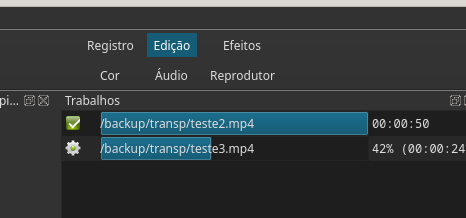

Apresentação base do vídeo de edição.
Importante: ao finalizar a edição deve exportar o vídeo resultante:
Arquivo - Exportar - Vídeo
Então observe o painel de Edição da direita

Veja que auando ele concluir mostrará um pequeno tick verde à esquerda do nome.
Capcut
Outra ferramenta muito boa e parecida com o Shotcut é o Capcut, embora não tenha versão para Linux. Sua versão para Windows acho até um pouco maiis prática que o Shotcut.
Com versão até para celular:
Celular
https://www.capcut.com/pt-br/tools/video-editing-app
https://www.youtube.com/watch?v=QJMuWByIzQY
https://www.youtube.com/watch?v=MGM-pAo8ar4
https://www.youtube.com/watch?v=k_QKYNIrwpA